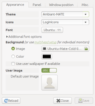

Vivid Vervet
Die Ubuntuversion nach Utopic Unicorn ist 15.04 „Vivid Vervet“ („Lebhafte Grünmeerkatze“). Diese Version wurde neun Monate mit Aktualisierungen versorgt. Der Zeitplan  findet sich im Ubuntu-Wiki.
findet sich im Ubuntu-Wiki.
| Ubuntu 15.04 | |
| Basisdaten | |
| Codename / dt. Übersetzung: | Vivid Vervet / Lebhafte Grünmeerkatze |
| Status: | nicht mehr unterstützt |
| Veröffentlichungstermin: | 23. April 2015 |
| Unterstützt bis: | 04. Februar 2016 (Desktop und Server) |
| Zeitleiste | |
| Vorgänger: 14.10 | Nachfolger: 15.10 |
Allgemein¶
|  |
| lightdm-gtk-greeter-settings bei Ubuntu MATE |
Kernel¶
Ubuntu 15.04 wird mit Kernel 3.19 ausgeliefert.
System¶
Ablösung von Upstart durch systemd als Init-System (siehe auch Systemd for Upstart users
)Xubuntu und Ubuntu MATE liefern erstmals ein Werkzeug zur grafischen Konfiguration von LightDM mit: den LightDM-GTK+ Einstellungseditor. Das Programm kann über das Paket lightdm-gtk-greeter-settings unter Lubuntu nachinstalliert werden.
Programmaktualisierungen¶
Firefox liegt in der Version 37 vor, Thunderbird bleibt bei Version 31. Allerdings kommen bereits seit Anfang 2012 alle unterstützten Ubuntu-Versionen in den Genuss aktueller Versionen dieser beiden Programme, so dass man 15.04 deswegen nicht installieren muss. LibreOffice ist dagegen in Version 4.4.2 enthalten.
Wieder in den offiziellen Paketquellen enthalten ist FFmpeg, nachdem es 2011 durch Libav ersetzt und mit Ubuntu 14.04 komplett aus den Paketquellen entfernt wurde. Entfernt wurde dagegen MP3Gain.
Ubuntu (Unity)¶
 Unity wird in der Version 7.3.2 ausgeliefert. Im Standard sind jetzt die Menüs der einzelnen Programme in der Titelleiste des jeweiligen Fensters und nicht mehr am Bildschirmrand.
Unity wird in der Version 7.3.2 ausgeliefert. Im Standard sind jetzt die Menüs der einzelnen Programme in der Titelleiste des jeweiligen Fensters und nicht mehr am Bildschirmrand.
Kubuntu (KDE Frameworks 5)¶
 Kubuntu setzt in dieser Version zum ersten Mal auf den neuen KDE-Desktop in der Version 5. Bei den Anwendungen bleibt man aber konservativ und liefert die bereits von Kubuntu 14.10 bekannten Anwendungen als KDE SC 4.14 aus. Zur grafischen Anmeldung wird nun SSDM verwendet.
Kubuntu setzt in dieser Version zum ersten Mal auf den neuen KDE-Desktop in der Version 5. Bei den Anwendungen bleibt man aber konservativ und liefert die bereits von Kubuntu 14.10 bekannten Anwendungen als KDE SC 4.14 aus. Zur grafischen Anmeldung wird nun SSDM verwendet.
Xubuntu (Xfce)¶
 Das Anfang März 2015 veröffentlichte Xfce 4.12 ist nach dem "Feature freeze" von 15.04 erschienen. Diese Ausgabe von Xubuntu setzt daher weiterhin auf Xfce 4.10. Allerdings wurden einige Komponenten (xfwm4, xfce4-panel, xfce4-settings, xfce4-power-manager) bereits auf Xfce 4.12 aktualisiert. Diese Aktualisierungen betreffen auch mehrere Programme: den Dateimanager Thunar, die Dateisuche Catfish, das Werkzeug Mugshot sowie den Menü-Editor Menulibre und den Startmenü-Ersatz Whisker Menu.
Das Anfang März 2015 veröffentlichte Xfce 4.12 ist nach dem "Feature freeze" von 15.04 erschienen. Diese Ausgabe von Xubuntu setzt daher weiterhin auf Xfce 4.10. Allerdings wurden einige Komponenten (xfwm4, xfce4-panel, xfce4-settings, xfce4-power-manager) bereits auf Xfce 4.12 aktualisiert. Diese Aktualisierungen betreffen auch mehrere Programme: den Dateimanager Thunar, die Dateisuche Catfish, das Werkzeug Mugshot sowie den Menü-Editor Menulibre und den Startmenü-Ersatz Whisker Menu.
Eine weitere Neuerung wurde erst Anfang Mai 2015 bekannt gegeben: Introducing Xubuntu core . Hierbei handelt es sich um ein abgespecktes inoffizielles Installationsmedium, mit dem sich Xubuntu, aber ohne vorinstallierte Software installieren lässt. Dadurch wurde die Größe der Abbilddatei von ca. 1 GiB auf CD-taugliche 600 MiB reduziert. Alternativ kann ausgehend von einer Minimalinstallation ein Metapaket installiert werden:
sudo apt-get install xubuntu-core^
Man beachte das Zeichen ^ am Ende, das nicht vergessen werden darf.
Lubuntu (LXDE)¶
 Da noch keine stabile Version von LXQt vorliegt, wurde die vorhandene Code-Basis von LXDE 0.5 auf Basis der Grafikbibliothek GTK weiter gepflegt und Fehler bereinigt.
Da noch keine stabile Version von LXQt vorliegt, wurde die vorhandene Code-Basis von LXDE 0.5 auf Basis der Grafikbibliothek GTK weiter gepflegt und Fehler bereinigt.
Ubuntu GNOME¶
 Auch Ubuntu GNOME setzt mit der Version 3.14.3 der GNOME Shell auf reine Aktualisierungen.
Auch Ubuntu GNOME setzt mit der Version 3.14.3 der GNOME Shell auf reine Aktualisierungen.
Ubuntu MATE¶
 Eine neue – und ab Ende Februar 2015 auch offizielle – Ubuntu-Variante ist Ubuntu MATE . Trotz einzelner Stimmen in der Vergangenheit, die MATE als GNOME-Abklatsch und Ressourcenverschwendung bezeichnet hatten, hat sich die Fortführung der GNOME-Version 2.32 vier Jahre nach ihrer Entstehung erfolgreich durchgesetzt und Einzug in die Paketquellen diverser Distributionen gefunden. Die Ziele der neuen Variante wurden mit folgender Grafik sehr schön grafisch umgesetzt:
Eine neue – und ab Ende Februar 2015 auch offizielle – Ubuntu-Variante ist Ubuntu MATE . Trotz einzelner Stimmen in der Vergangenheit, die MATE als GNOME-Abklatsch und Ressourcenverschwendung bezeichnet hatten, hat sich die Fortführung der GNOME-Version 2.32 vier Jahre nach ihrer Entstehung erfolgreich durchgesetzt und Einzug in die Paketquellen diverser Distributionen gefunden. Die Ziele der neuen Variante wurden mit folgender Grafik sehr schön grafisch umgesetzt:
Interessierte sollten auch Ubuntu MATE 14.10 and 15.04 Useful Information beachten.
Links¶
Ubuntu 15.04 „Vivid Vervet“ ist erschienen - Ikhaya, 04/2015
Veröffentlichungshinweise und bekannte Fehler:


Distributionstests - Ubuntu und Kubuntu 15.04
 , Pro-Linux.de, 04/2015
, Pro-Linux.de, 04/2015Gestatten: Vivid Vervet - Ikhaya, 10/2014
Blogeintrag
von Mark Shuttleworth zu Vivid VervetVivid Vervet 15.04 - Allgemeine Diskussion zur Entwicklungsversion (hier im Forum)
Vivid Vervet in Launchpad
- Erstellt mit Inyoka
-
 2004 – 2017 ubuntuusers.de • Einige Rechte vorbehalten
2004 – 2017 ubuntuusers.de • Einige Rechte vorbehalten
Lizenz • Kontakt • Datenschutz • Impressum • Serverstatus -
Serverhousing gespendet von